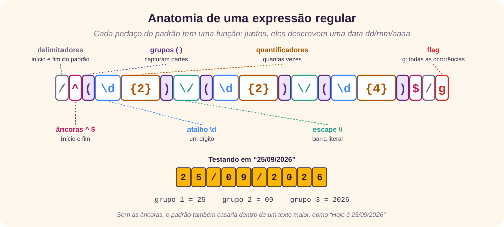
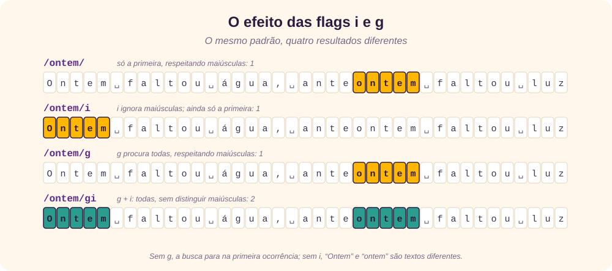
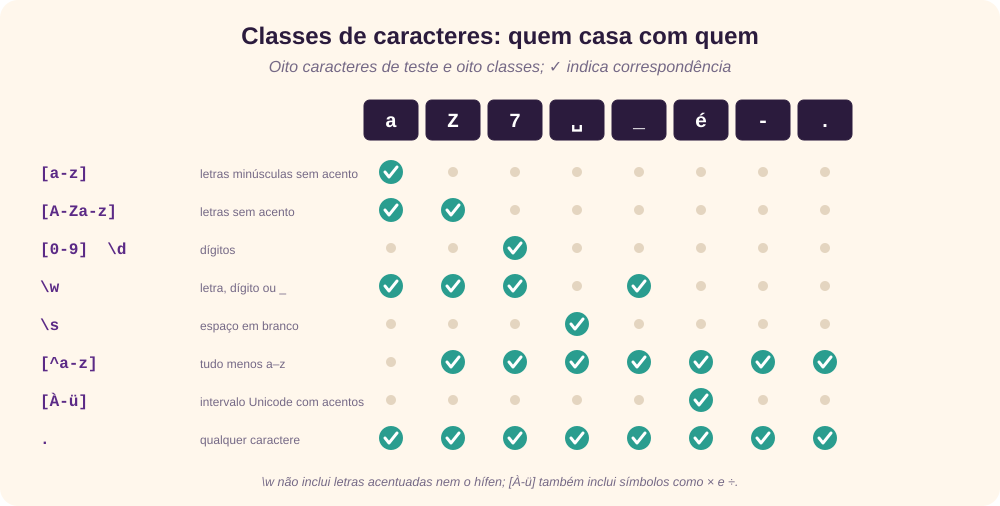
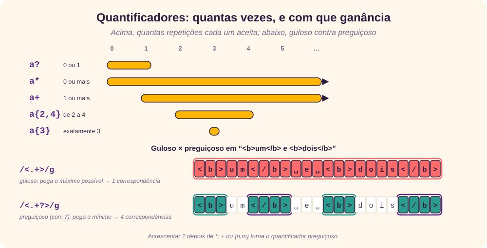
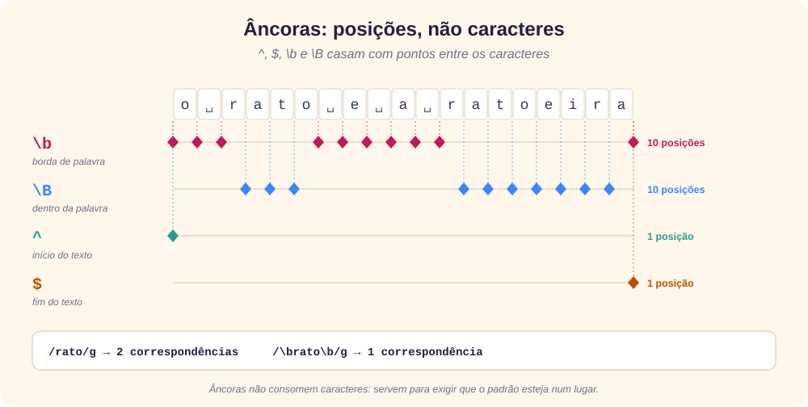
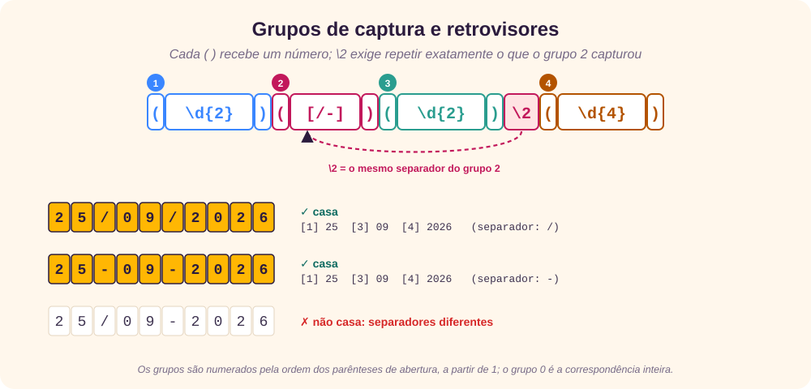

O que é uma expressão regular
Uma expressão regular (regular expression, ou regex) é uma forma compacta e formal de descrever um padrão de texto. Em vez de procurar uma palavra exata, você descreve a forma do que procura, por exemplo “dois dígitos, uma barra, dois dígitos, outra barra e quatro dígitos”, e o programa encontra tudo o que se encaixa. [1] [3]
A ideia vem da teoria da computação: o matemático Stephen Kleene formalizou as “linguagens regulares” nos anos 1950, e Ken Thompson levou a notação para o editor de texto QED em 1968 e, depois, para ferramentas do Unix como o grep. Hoje quase toda linguagem de programação tem um motor de regex. [5] [6]
Usos típicos:
- busca: encontrar todas as datas de um documento;
- substituição: trocar
dd/mm/aaaaporaaaa-mm-dd; - validação: conferir se um CEP ou um horário tem o formato certo;
- extração e filtragem: tirar de um log só as linhas com erro.
Existem vários “sabores” (flavors) de regex, e eles não são idênticos. Os exemplos deste tutorial usam a sintaxe do JavaScript e foram testados no Node.js 22; quando um recurso só existe em outros motores, como PCRE (PHP), .NET ou Python, isso está indicado. [2] [7] [8]
Anatomia de um padrão
O padrão (pattern) é a sequência de caracteres que forma a expressão. Em JavaScript ele fica entre barras, e as flags vêm depois da barra final: /padrão/flags. A maioria dos caracteres casa com ele mesmo; alguns, os metacaracteres, têm significado especial.
padrão: /a/
texto: A casa está limpa.
casa: ^
padrão: /celular/
texto: O celular está tocando.
casa: ^^^^^^^No primeiro exemplo, o A maiúsculo não casa, porque a busca diferencia maiúsculas de minúsculas, e sem a flag g só a primeira ocorrência é devolvida. A figura mostra um padrão completo, peça por peça.

Flags
As flags mudam o comportamento do motor para o padrão inteiro. Estas são as do JavaScript: [4]
| Flag | Nome | O que faz |
|---|---|---|
g | global | Procura todas as ocorrências, não só a primeira. |
i | ignore case | Não diferencia maiúsculas de minúsculas. |
m | multiline | Faz ^ e $ casarem no início e no fim de cada linha, e não só do texto inteiro. |
s | dotAll | Faz o ponto (.) casar também com a quebra de linha. |
u | unicode | Trata o padrão como Unicode completo (emojis, \u{1F600}, \p{L}). |
v | unicodeSets | Versão ampliada de u, com operações de conjunto dentro de [ ]. |
y | sticky | Só casa exatamente na posição indicada por lastIndex. |
d | hasIndices | Devolve também as posições de início e fim de cada grupo. |
Duas correções em relação ao texto original: [1]
- A flag
snão quer dizer “linha única” no sentido de desligar o modo multilinha: ela faz o ponto aceitar\n. O nome “single line” vem do Perl e confunde muita gente. [3] - A flag
x(extended) existe em PCRE, Perl, .NET e Python (re.X): ela ignora espaços no padrão e permite comentários com#. O JavaScript não tem essa flag e dá erro ao recebê-la. [7] [8]

Alternância e conjuntos
Ou: |
A barra vertical separa alternativas: o motor aceita o que estiver à esquerda ou à direita.
padrão: /ver|distrai/gi
texto: Ver a linha do horizonte me distrai
casa: ^^^ ^^^^^^^
padrão: /20|nove/gi
texto: Perdi 20 em 20 e nove amizades
casa: ^^ ^^ ^^^^Conjunto: [ ]
Os colchetes definem uma classe de caracteres: uma única posição que aceita qualquer um dos caracteres listados. /[em²]/gi e /e|m|²/gi dão o mesmo resultado em E = mc², mas o conjunto é mais curto e mais rápido.
Intervalos: [a-z]
Dentro de um conjunto, o hífen indica um intervalo na ordem da tabela Unicode: [a-z], [A-Z], [0-9]. Por isso [a-Z] e [4-1] são erros: o início vem depois do fim na tabela.
padrão: /[a-z]/g
texto: João de Santo Cristo
casa: ^ ^ ^^ ^^^^ ^^^^^
padrão: /[0-9.,]/g
texto: Um ps4 custa R$ 1.600,00
casa: ^ ^^^^^^^^No original, estes dois padrões aparecem sem a flag g, mas com todas as ocorrências marcadas; sem g, só a primeira seria encontrada (o o de “João” e o 4 de “ps4”). Repare também que o ã não casa com [a-z]: letras acentuadas estão fora desse intervalo.
Para aceitar letras acentuadas, o original sugere [À-ü]. Funciona para o português, mas o intervalo de U+00C0 a U+00FC também inclui os sinais × e ÷. Com a flag u, a forma robusta é \p{L}, “qualquer letra de qualquer alfabeto”. [19] [3]
Negação: [^ ]
Um ^ logo depois do [ inverte o conjunto: casa com tudo o que não está listado.
padrão: /[^aeiouí]/gi
texto: Paralelepípedo
casa: ^ ^ ^ ^ ^ ^ ^
Metacaracteres e escape
Os metacaracteres são . ^ $ * + ? ( ) [ ] { } | \ /. Para usar qualquer um deles como caractere comum, coloque uma barra invertida antes: \. casa com um ponto, \/ com uma barra. [3]
| Símbolo | Significado |
|---|---|
. | Curinga: qualquer caractere, exceto quebra de linha (a menos que se use a flag s). |
- | Intervalo, mas só dentro de [ ], como em [1-9]. Fora dos colchetes é um hífen comum. |
^ | Dois papéis: no início de um conjunto ([^…]) é negação; fora dele é a âncora de início. O original cita só a negação. |
\ | Escape: transforma um metacaractere em literal, ou uma letra comum em atalho (\d, \w). |
padrão: /cas./gi
texto: Casa, caso, case
casa: ^^^^ ^^^^ ^^^^
padrão: /[a\-o]/gi // a, hífen ou o; não o intervalo de a até o
texto: cachorro-quente.
casa: ^ ^ ^^Quantificadores
Um quantificador diz quantas vezes o elemento anterior pode se repetir.
| Guloso | Preguiçoso | Repetições |
|---|---|---|
? | ?? | 0 ou 1 (opcional) |
* | *? | 0 ou mais |
+ | +? | 1 ou mais |
{n} | — | exatamente n |
{n,} | {n,}? | n ou mais |
{n,m} | {n,m}? | de n até m |
O quantificador guloso pega o máximo que consegue e só devolve caracteres se o resto do padrão precisar. O preguiçoso, com um ? no fim, faz o contrário: pega o mínimo e só avança se precisar. [3] [15]

Âncoras
Âncoras não casam com caracteres, e sim com posições. Elas servem para exigir que o padrão esteja num certo lugar. [3]
| Âncora | Posição |
|---|---|
^ | Início do texto (ou de cada linha, com a flag m). |
$ | Fim do texto (ou de cada linha, com a flag m). |
\b | Borda de palavra: entre um caractere de palavra (\w) e um que não é. |
\B | O contrário de \b: uma posição que não é borda de palavra. |
Em validações, use ^ e $ juntos: sem eles, /\d{5}-\d{3}/ aceitaria “abc90050-170xyz”, porque o CEP aparece dentro do texto.

Atalhos (shorthands)
Os atalhos são abreviações de classes e caracteres comuns. A tabela do original foi tirada da referência do .NET; a coluna “JS” diz se o atalho também funciona no JavaScript. [2] [3]
| Atalho | Casa com | JS |
|---|---|---|
\d · \D | Um dígito [0-9] · qualquer coisa que não seja dígito. | sim |
\w · \W | Caractere de palavra [A-Za-z0-9_] · o contrário. Letras acentuadas não entram. | sim |
\s · \S | Espaço em branco (espaço, tab, quebras de linha…) · o contrário. | sim |
\b · \B | Borda de palavra · não-borda. Dentro de [ ], [\b] é o backspace (U+0008). O original descreve \B como “um limite”; é o oposto. | sim |
\t \n \r \v \f | Tab, nova linha, retorno de carro, tab vertical, avanço de página. | sim |
\0 | O caractere nulo (U+0000). | sim |
\xhh · \uhhhh | Caractere pelo código hexadecimal, sem espaço entre o x e os dígitos: \x2A é *, é é é. | sim |
\cX | Caractere de controle: \cC é o Ctrl+C (U+0003). O original também diz que \c “torna literal o caractere c”, o que está errado. | sim |
\1, \2… | Retrovisor: repete o que o grupo 1, 2… capturou. | sim |
\a · \e | Sino (U+0007) · escape (U+001B). | não |
\A · \z · \Z | Início do texto · fim do texto · fim do texto ou antes da última quebra de linha. Em JS, use ^ e $ sem a flag m. | não |
\nnn | Caractere em octal, como \040 (espaço). É uma forma antiga; prefira \x20 ou o próprio espaço. | legado |
Grupos e retrovisores
Os parênteses ( ) agrupam parte do padrão. Isso tem três usos: aplicar um quantificador a vários caracteres de uma vez, capturar o trecho para usá-lo depois e criar retrovisores (backreferences), que exigem repetir o que já foi capturado. O original chama esta seção de “Conjunto”, o mesmo nome dos colchetes; o nome certo é grupo. [1]
padrão: /(\d{2})\/?(\d{2})?\/(\d{4})/
texto: Hoje é dia 20/01/2020
casa: ^^^^^^^^^^
padrão: /\d{2}(\/?)\d{2}\1\d{4}/g
texto: 20/01/2020 25091991 25-09/2000
casa: ^^^^^^^^^^ ^^^^^^^^No segundo exemplo, \1 repete o separador capturado: barra com barra, ou nada com nada. Por isso “25-09/2000” fica de fora. O original escreve \d{2}? no meio; isso não torna os dígitos opcionais, é só a versão preguiçosa de {2}, que continua exigindo dois dígitos, então o ? pode ser removido.

| Sintaxe | Função | Onde funciona |
|---|---|---|
(…) | Grupo de captura, numerado a partir de 1 pela ordem dos parênteses. | todos |
(?:…) | Agrupa sem capturar; útil só para aplicar um quantificador ou uma alternância. | todos |
(?<nome>…) | Captura com nome; o retrovisor é \k<nome>. [20] | JS, PCRE, .NET, Python 3.11+ (em Python também (?P<nome>…)) |
(?'nome'…) | Mesma coisa, com aspas simples. | PCRE, .NET |
(?>…) | Grupo atômico: depois de casar, não volta atrás (backtracking) para tentar outra divisão. [9] | PCRE, .NET, Java, Python 3.11+ |
(?|…) | Branch reset: cada alternativa reutiliza os mesmos números de grupo. [10] | PCRE, Perl |
(?#…) | Comentário dentro do padrão. | PCRE, .NET, Python |
O JavaScript rejeita as quatro últimas sintaxes com o erro “Invalid group”. Também há os lookarounds, que olham para a frente ou para trás sem consumir caracteres: (?=…), (?!…), (?<=…) e (?<!…). Eles funcionam no JavaScript. [3]
Classes POSIX
As classes POSIX são nomes para conjuntos comuns e só valem dentro de colchetes: [[:digit:]]. Funcionam em PCRE (PHP), Perl, grep e sed, mas não em JavaScript, .NET ou Python. No JavaScript, [[:alpha:]] nem dá erro: vira um conjunto com os caracteres [ : a l p h, seguido de um ] literal. [7]
| POSIX | Equivalente ASCII | Significado |
|---|---|---|
[[:alnum:]] | [a-zA-Z0-9] | letras e dígitos |
[[:alpha:]] | [a-zA-Z] | letras |
[[:digit:]] | [0-9] | dígitos |
[[:xdigit:]] | [A-Fa-f0-9] | dígitos hexadecimais |
[[:lower:]] · [[:upper:]] | [a-z] · [A-Z] | minúsculas · maiúsculas |
[[:space:]] | [ \t\r\n\v\f] | espaços, incluindo quebras de linha |
[[:blank:]] | [ \t] | só espaço e tab (o original escreve [\s\t], que incluiria quebras de linha) |
[[:punct:]] | [!-/:-@[-`{-~] | pontuação ASCII |
[[:cntrl:]] | [\x00-\x1F\x7F] | caracteres de controle |
[[:print:]] · [[:graph:]] | [\x20-\x7E] · [\x21-\x7E] | visíveis com espaço · visíveis sem espaço |
[[:word:]] | [A-Za-z0-9_] | o mesmo que \w (extensão do Perl e do PCRE) |
Exemplos práticos
Os padrões do original, testados e, quando necessário, corrigidos. Em validação, todos levam ^ e $ para exigir o texto inteiro. [1]
Data dd/mm/aaaa
^(0[1-9]|[12][0-9]|3[01])[-\/.](0[1-9]|1[0-2])[-\/.]((19|20)\d{2})$Aceita 25/09/2026 e 31.12.1999 e rejeita 32/01/2020. Mas regex só confere o formato: 31/04/2026 e 29/02/2021, que não existem, também passam. Para validar a data de verdade, converta e confira no código.
Hora hh:mm
^([01]?\d|2[0-3]):([0-5]\d)$Aceita 7:05 e 23:59 e rejeita 24:00. Sem o $ final, que falta no original, “12:345” também passaria.
Data e hora ISO 8601 (AAAA-MM-DDTHH:MM:SS)
^(?<ano>\d{4})-(?<mes>0[1-9]|1[0-2])-(?<dia>0[1-9]|[12]\d|3[01])T(?<hora>[01]\d|2[0-3]):(?<min>[0-5]\d):(?<seg>[0-5]\d)(?:Z|\.(?<ms>\d{2,3}))$Duas correções: o original usa 1[1-2] para o mês, o que exclui outubro (o certo é 1[0-2]), e usa um ponto sem escape antes dos milissegundos, que aceitaria qualquer caractere. O formato completo da norma também admite fusos como -03:00. [12]
CEP
^\d{2}\.?\d{3}-?\d{3}$O original aceita “90.050-170” e “90050170”, mas rejeita a forma mais comum, “90050-170”. Com o ponto e o hífen opcionais, as três formas passam.
^[^\s@]+@[^\s@]+\.[^\s@]+$É uma checagem simples de “algo@algo.algo”, e é o bastante para um formulário. A sintaxe completa de endereços (RFC 5322) é tão ampla que nenhuma regex curta a cobre; a única validação real é enviar uma mensagem de confirmação. [11]
IPv4
^(?:(?:25[0-5]|2[0-4]\d|1?\d\d?)\.){3}(?:25[0-5]|2[0-4]\d|1?\d\d?)$Correto: aceita 192.168.0.1 e rejeita 256.1.1.1. Repare na alternância que limita cada número a no máximo 255.
URL simples
^([a-z]+):\/\/([^\/:]+)(?::(\d+))?(\/[^?#]*)?$O padrão original, ^([a-z]+):\/\/([^\/]+)\/?([^:]+):?(\d+)?$, quebra quando não há caminho: em “https://example.com” o host sai “example.co” e o caminho “m”, porque ([^:]+) exige pelo menos um caractere. A versão acima separa esquema, host, porta e caminho.
Nome de arquivo PDF
^[\w-]+\.pdf$Equivale ao ^(\w*)(-\w*)*\.pdf original, mais curto e sem aceitar um “.pdf” sem nome. Nos dois, “relatório.pdf” é rejeitado por causa do ó; com a flag u, use [\p{L}\d_-].
Separadores e telefones
Os padrões de hífen e telefone do original usam \040 para o espaço, uma forma octal antiga, e o último usa [[:punct:]], que não funciona em JavaScript. Uma versão mais legível para telefones brasileiros com DDD:
^\(?(\d{2})\)?[ .-]?(9?\d{4})[ .-]?(\d{4})$Aceita “(51) 99999-8888”, “51 3333.4444” e “51999998888”.
Ferramentas
- regex101: testa o padrão em tempo real, explica cada pedaço e permite trocar o sabor (PCRE, JavaScript, Python, .NET, Java). [13]
- Regexper: desenha o padrão como um diagrama de trilhos, ótimo para entender expressões longas. [14]
- Code Beautify: gera dados aleatórios a partir de uma regex, útil para testes. [18]
- RexEgg e o guia de Alexandre Servian: textos para se aprofundar, incluindo técnicas avançadas. [15] [16]
- Para ir além, o livro de referência sobre o assunto é Mastering Regular Expressions, de Jeffrey Friedl. [17]
Revisão rápida
Tente responder antes de abrir cada pergunta.
1. Quantas ocorrências /[a-z]/ encontra em “João de Santo Cristo”?
Uma só, o o. Sem a flag g, a busca para na primeira; com /[a-z]/g, são 13.
2. Qual a diferença entre [^a] e ^a?
[^a] é um caractere qualquer que não seja a; ^a é um a no início do texto.
3. O que a flag s faz no JavaScript?
Faz o ponto casar também com a quebra de linha (modo dotAll).
4. Por que /a{1, 3}/ não encontra “aaa”?
Por causa do espaço: o JavaScript não reconhece o quantificador e procura o texto literal “a{1, 3}”. O certo é /a{1,3}/.
5. Em <b>um</b>, o que /<.+>/ e /<.+?>/ encontram primeiro?
O guloso pega o texto inteiro, de <b> até </b>; o preguiçoso pega só <b>.
6. Com que posições \B casa?
Com as que não são borda de palavra, como entre o r e o a de “rato”.
7. Em /(\d{2})([\/-])\d{2}\2\d{4}/, para que serve o \2?
É um retrovisor: exige que o segundo separador seja igual ao que o grupo 2 capturou. Assim, 25/09/2026 casa e 25/09-2026 não.
8. Qual o erro no mês (0[1-9]|1[1-2])?
Ele não aceita 10. O certo é (0[1-9]|1[0-2]).
9. [[:digit:]] funciona no JavaScript?
Não. Classes POSIX são de PCRE, Perl e ferramentas como grep; no JavaScript, use \d ou [0-9].
Referências
- Giovani Perotto Mesquita, “Regular Expression”, GitHub Gist, texto original deste tutorial, gist.github.com/GiovaniPM/04efc466d19ccc8d112d036c48de4a5c.
- Microsoft Learn, “Linguagem de expressões regulares – referência rápida”, acesso em 25/09/2026, learn.microsoft.com/pt-br/dotnet/standard/base-types/regular-expression-language-quick-reference.
- MDN Web Docs, “Expressões regulares”, acesso em 25/09/2026, developer.mozilla.org/pt-BR/docs/Web/JavaScript/Guide/Regular_expressions.
- MDN Web Docs, “RegExp.prototype.flags”, acesso em 25/09/2026, developer.mozilla.org/en-US/docs/Web/JavaScript/Reference/Global_Objects/RegExp/flags.
- Wikipedia (em inglês), “Regular expression”, acesso em 25/09/2026, en.wikipedia.org/wiki/Regular_expression.
- Wikipedia (em inglês), “Stephen Cole Kleene”, acesso em 25/09/2026, en.wikipedia.org/wiki/Stephen_Cole_Kleene.
- PCRE2, “pcre2pattern”, documentação da sintaxe de padrões, acesso em 25/09/2026, pcre.org/current/doc/html/pcre2pattern.html.
- Python Software Foundation, “re — Regular expression operations”, acesso em 25/09/2026, docs.python.org/3/library/re.html.
- Jan Goyvaerts, “Atomic Grouping”, Regular-Expressions.info, acesso em 25/09/2026, regular-expressions.info/atomic.html.
- Jan Goyvaerts, “Branch Reset Groups”, Regular-Expressions.info, acesso em 25/09/2026, regular-expressions.info/branchreset.html.
- P. Resnick (ed.), RFC 5322: Internet Message Format, IETF, 2008, acesso em 25/09/2026, rfc-editor.org/rfc/rfc5322.
- Wikipedia (em inglês), “ISO 8601”, acesso em 25/09/2026, en.wikipedia.org/wiki/ISO_8601.
- regex101, site oficial, acesso em 25/09/2026, regex101.com.
- Jeff Avallone, Regexper, site oficial, acesso em 25/09/2026, regexper.com.
- RexEgg, “Rex Eats Regular Expressions for Breakfast”, acesso em 25/09/2026, rexegg.com.
- Alexandre Servian, “Regex: um guia prático para expressões regulares”, Medium, acesso em 25/09/2026, medium.com/@alexandreservian/regex-um-guia-pratico-para-expressões-regulares-1ac5fa4dd39f.
- Jeffrey E. F. Friedl, Mastering Regular Expressions, 3. ed., O’Reilly Media, 2006.
- Code Beautify, “Generate Random Data from Regular Expression”, acesso em 25/09/2026, codebeautify.org/generate-random-data-from-regexp.
- Wikipedia (em inglês), “Latin-1 Supplement”, acesso em 25/09/2026, en.wikipedia.org/wiki/Latin-1_Supplement.
- MDN Web Docs, “Named capturing group”, acesso em 25/09/2026, developer.mozilla.org/en-US/docs/Web/JavaScript/Reference/Regular_expressions/Named_capturing_group.